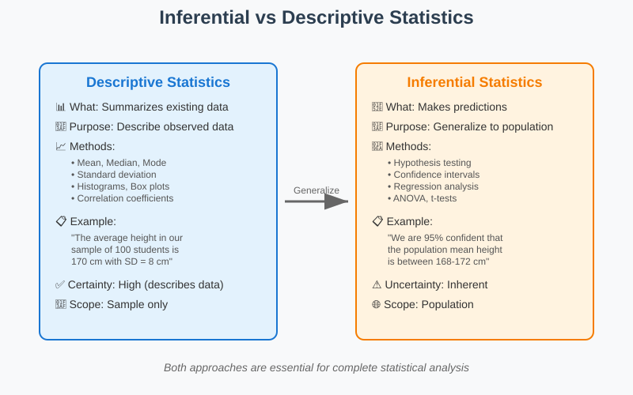
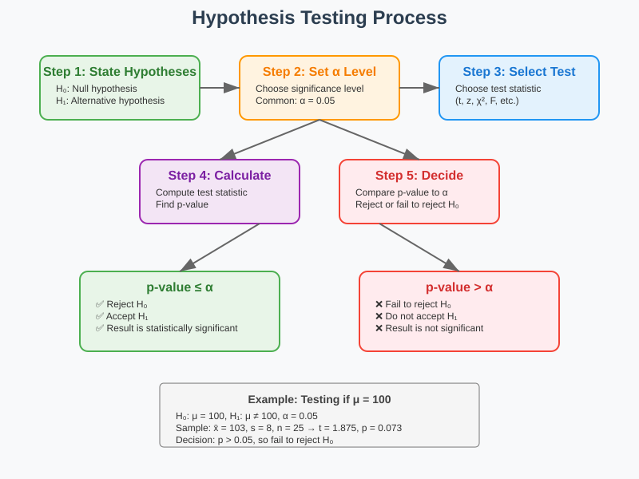
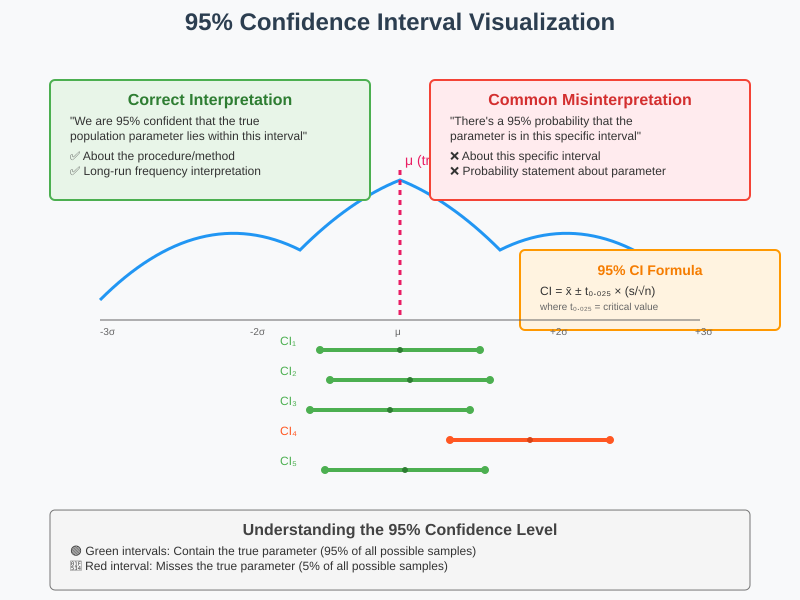
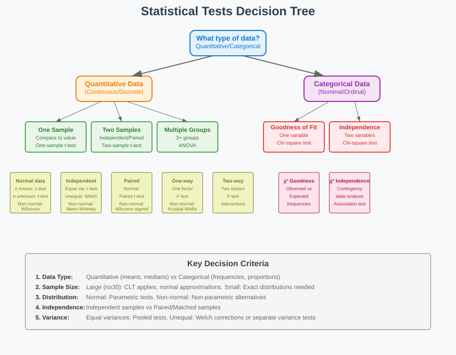
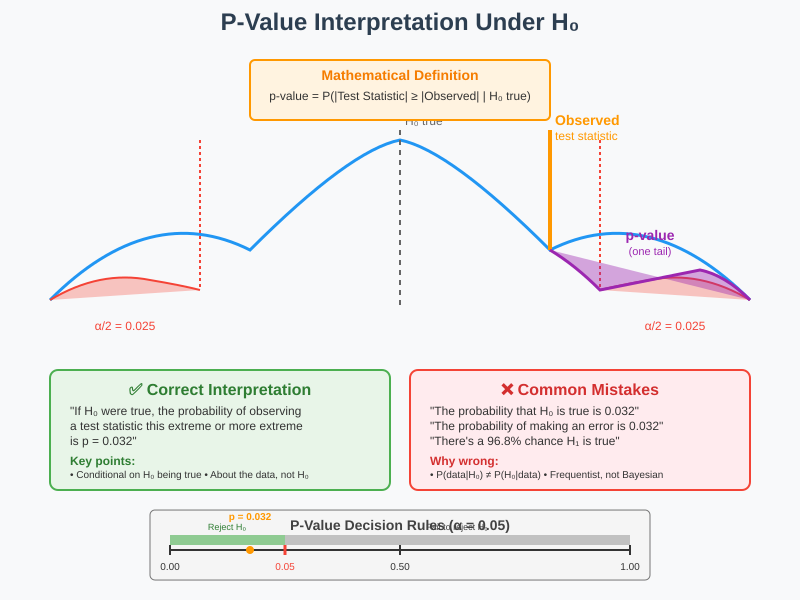
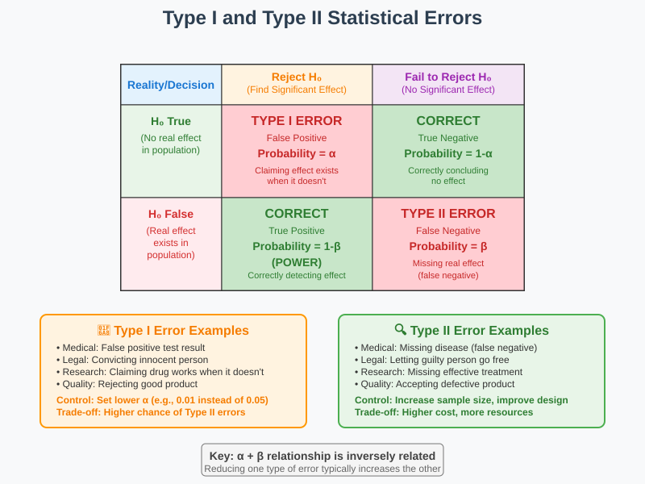
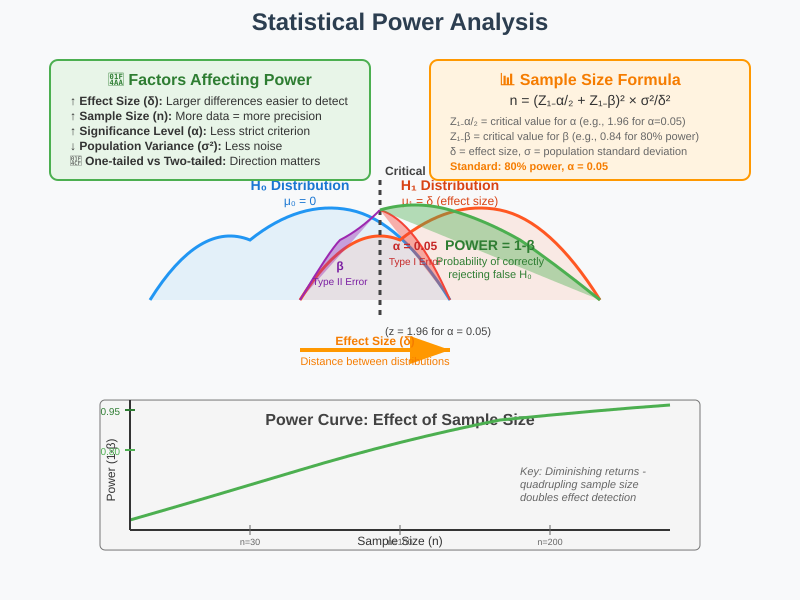
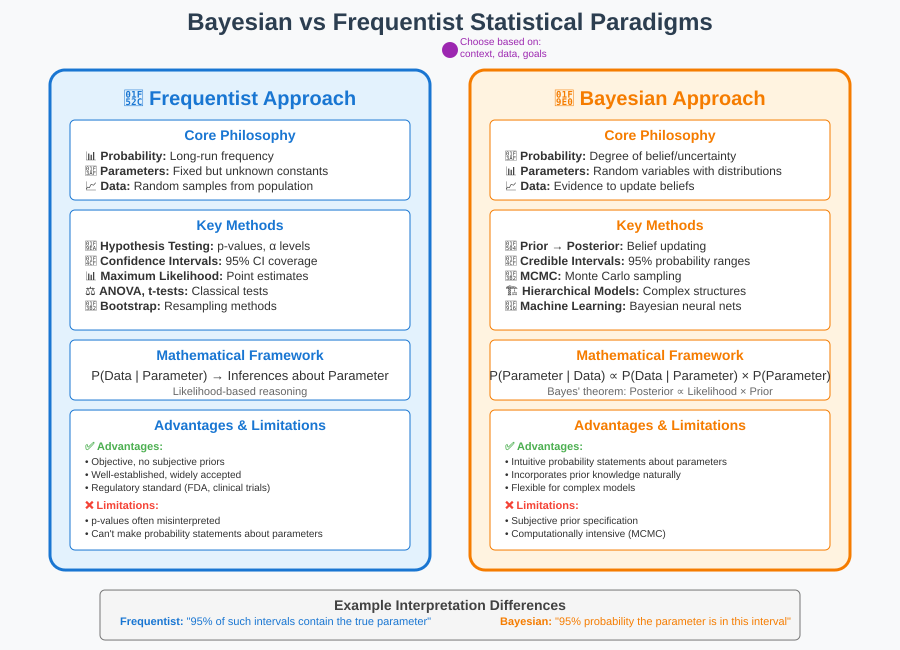

Inferential Statistics: From Sample to Population 📊
A comprehensive guide to statistical inference for AI practitioners, engineers, and researchers
📋 Quick Navigation
- 🎯 Introduction to Inferential Statistics
- 🔬 Hypothesis Testing Framework
- 📏 Confidence Intervals
- 📊 Common Statistical Tests
- ⚖️ P-Values and Statistical Significance
- ❌ Type I and Type II Errors
- 💪 Effect Size and Power Analysis
- 🤖 Bayesian vs Frequentist Approaches
- 🔗 Resources and Implementation
🎯 Introduction to Inferential Statistics

Inferential statistics enables us to draw conclusions about populations based on sample data. Unlike descriptive statistics that summarize data we have, inferential statistics help us make predictions and test hypotheses about data we don't have.
Key Concepts
Population vs Sample: - Population: The entire group we want to study - Sample: A subset of the population we actually observe - Parameter: A numerical characteristic of a population (usually unknown) - Statistic: A numerical characteristic of a sample (computed from data)
Core Assumptions: - Random Sampling: Every member of the population has an equal chance of being selected - Independence: Observations don't influence each other - Normality: Many methods assume normally distributed data or large sample sizes
Mathematical Foundation:
The Central Limit Theorem states that for large sample sizes (n ≥ 30), the sampling distribution of the sample mean approaches a normal distribution:
X̄ ~ N(μ, σ²/n)
Where:
- X̄ = sample mean
- μ = population mean
- σ² = population variance
- n = sample size
🔬 Hypothesis Testing Framework

Hypothesis testing provides a systematic framework for making decisions about population parameters based on sample evidence.
The Five-Step Process
Step 1: State Hypotheses - Null Hypothesis (H₀): Statement of no effect or no difference - Alternative Hypothesis (H₁ or Hₐ): Statement we want to test
Step 2: Choose Significance Level (α) - Common choices: α = 0.05, 0.01, or 0.10 - Represents the probability of Type I error
Step 3: Select Test Statistic - Based on data type and distribution assumptions - Examples: t-statistic, z-statistic, χ² statistic
Step 4: Calculate P-value - Probability of observing the data (or more extreme) given H₀ is true
Step 5: Make Decision - If p-value ≤ α: Reject H₀ - If p-value > α: Fail to reject H₀
Types of Alternative Hypotheses
Two-tailed test:
H₀: μ = μ₀
H₁: μ ≠ μ₀
One-tailed test (right-tail):
H₀: μ ≤ μ₀
H₁: μ > μ₀
One-tailed test (left-tail):
H₀: μ ≥ μ₀
H₁: μ < μ₀
📏 Confidence Intervals

Confidence intervals provide a range of plausible values for population parameters, offering more information than point estimates alone.
Interpretation and Construction
95% Confidence Interval for Population Mean:
For large samples (n ≥ 30):
CI = X̄ ± Z₀.₀₂₅ × (σ/√n)
For small samples with unknown σ:
CI = X̄ ± t₀.₀₂₅,df × (s/√n)
Where:
- X̄ = sample mean
- Z₀.₀₂₅ = 1.96 (critical value for 95% confidence)
- t₀.₀₂₅,df = critical value from t-distribution
- s = sample standard deviation
- df = n - 1 (degrees of freedom)
Key Properties
Correct Interpretation: - "We are 95% confident that the true population parameter lies within this interval" - NOT: "There's a 95% probability the parameter is in this interval"
Factors Affecting Width: - Sample size: Larger n → narrower intervals - Confidence level: Higher confidence → wider intervals - Population variability: Higher σ → wider intervals
Common Confidence Intervals
| Parameter | Formula | Conditions |
|---|---|---|
| Mean (σ known) | X̄ ± Z_{α/2} × (σ/√n) | Large sample or normal population |
| Mean (σ unknown) | X̄ ± t_{α/2,df} × (s/√n) | Normal population or large sample |
| Proportion | p̂ ± Z_{α/2} × √(p̂(1-p̂)/n) | np ≥ 5 and n(1-p) ≥ 5 |
| Variance | ((n-1)s²/χ²_{α/2,df}, (n-1)s²/χ²_{1-α/2,df}) | Normal population |
📊 Common Statistical Tests

Different statistical tests are used depending on the type of data and research question.
One-Sample Tests
One-Sample t-test: - Purpose: Test if population mean equals a specific value - Test statistic: t = (X̄ - μ₀)/(s/√n) - Assumptions: Normal distribution or large sample (n ≥ 30)
One-Sample z-test: - Purpose: Test population mean when σ is known - Test statistic: z = (X̄ - μ₀)/(σ/√n) - Assumptions: Normal distribution or large sample
Two-Sample Tests
Independent Two-Sample t-test: - Purpose: Compare means of two independent groups - Equal variances: t = (X̄₁ - X̄₂)/√(s²ₚ(1/n₁ + 1/n₂)) - Unequal variances (Welch's t-test): More complex denominator
Paired t-test: - Purpose: Compare means of paired observations - Test statistic: t = d̄/(s_d/√n) - Where:
- d̄ = mean difference
- s_d = standard deviation of differences
Multiple Group Comparisons
One-Way ANOVA: - Purpose: Compare means across multiple groups - Test statistic: F = MSB/MSW - Post-hoc tests: Tukey HSD, Bonferroni correction
Two-Way ANOVA: - Purpose: Examine effects of two factors simultaneously - Tests:
- Main effects and interaction effects
Categorical Data Tests
Chi-Square Goodness of Fit: - Purpose: Test if observed frequencies match expected - Test statistic: χ² = Σ((O_i - E_i)²/E_i)
Chi-Square Test of Independence: - Purpose: Test association between two categorical variables - Expected frequency:
- E_ij = (Row_i × Column_j)/Total
Non-Parametric Tests
Mann-Whitney U Test: - Purpose: Compare two independent groups (non-parametric alternative to t-test) - When to use:
- Non-normal data, ordinal data
Wilcoxon Signed-Rank Test: - Purpose:
- Compare paired observations (non-parametric alternative to paired t-test)
Kruskal-Wallis Test: - Purpose:
- Compare multiple groups (non-parametric alternative to ANOVA)
⚖️ P-Values and Statistical Significance

P-values are one of the most misunderstood concepts in statistics. Understanding their proper interpretation is crucial for valid statistical inference.
What P-Values Really Mean
Formal Definition: The p-value is the probability of observing the test statistic value (or more extreme) assuming the null hypothesis is true.
Mathematical Expression:
p-value = P(Test Statistic ≥ observed value | H₀ is true)
Common Misinterpretations
❌ Incorrect Interpretations: - "P-value is the probability that H₀ is true" - "P-value is the probability of making an error" - "1 - p-value is the probability that H₁ is true"
✅ Correct Interpretation: - "Given that H₀ is true, there's a p-value probability of observing data this extreme or more extreme"
Statistical Significance
Traditional Significance Levels: - α = 0.05: 5% chance of Type I error - α = 0.01: 1% chance of Type I error - α = 0.10: 10% chance of Type I error
Decision Rules: - p ≤ α: Reject H₀ (statistically significant) - p > α: Fail to reject H₀ (not statistically significant)
Modern Perspectives on P-Values
ASA Statement on P-Values (2016): - P-values do not measure the probability that the hypothesis is true - Statistical significance does not imply practical significance - Decisions should not be based solely on p-values - P-hacking and multiple testing issues
Alternatives and Supplements: - Effect sizes: Measure practical significance - Confidence intervals: Provide range of plausible values - Bayesian methods: Provide probability statements about hypotheses
❌ Type I and Type II Errors

Understanding statistical errors is essential for proper interpretation of hypothesis test results and study design.
Error Types and Definitions
Type I Error (α): - Definition: Rejecting H₀ when H₀ is actually true - Also called: False positive - Probability: α (significance level) - Consequence: Concluding an effect exists when it doesn't
Type II Error (β): - Definition: Failing to reject H₀ when H₀ is actually false - Also called: False negative - Probability: β - Consequence: Missing a real effect
Truth Table
| Reality | Decision: Reject H₀ | Decision: Fail to Reject H₀ |
|---|---|---|
| H₀ True | Type I Error (α) | Correct Decision (1-α) |
| H₀ False | Correct Decision (1-β) | Type II Error (β) |
Factors Affecting Error Rates
Factors Increasing Type I Error: - Multiple testing: Testing many hypotheses increases familywise error rate - Data snooping: Looking at data before forming hypotheses - P-hacking: Manipulating analysis to achieve significance
Factors Increasing Type II Error: - Small sample size: Reduces power to detect effects - Small effect size: Harder to detect subtle differences - High variability: Noise masks signal - Conservative α level: Stricter criteria for significance
Controlling Error Rates
Type I Error Control: - Bonferroni correction: α_adjusted = α/k (k = number of tests) - False Discovery Rate (FDR): Controls proportion of false discoveries - Family-wise Error Rate (FWER): Controls probability of any Type I error
Type II Error Reduction: - Increase sample size: More data provides more power - Use more powerful tests: Appropriate test selection - Reduce variability: Better experimental design - Increase effect size: Larger differences are easier to detect
💪 Effect Size and Power Analysis

Power analysis and effect size help us design studies appropriately and interpret results meaningfully beyond statistical significance.
Statistical Power
Definition: Power = P(Reject H₀ | H₀ is false) = 1 - β
Factors Affecting Power: - Effect size (ES): Larger effects are easier to detect - Sample size (n): More data increases power - Significance level (α): Higher α increases power - Population variance (σ²): Lower variance increases power
Mathematical Relationship:
Power = 1 - β = f(ES, n, α, σ²)
Effect Size Measures
Cohen's d (for means):
d = (μ₁ - μ₂)/σ
Cohen's Conventions: - Small effect: d = 0.2 - Medium effect: d = 0.5 - Large effect: d = 0.8
Correlation Effect Size (r): - Small effect: r = 0.1 - Medium effect: r = 0.3 - Large effect: r = 0.5
Eta-squared (η²) for ANOVA:
η² = SSₑffₑcₜ/SSₜₒₜₐₗ
Power Analysis Applications
Prospective Power Analysis (Study Design): - Purpose: Determine required sample size - Given: Desired power (usually 0.80), α, expected effect size - Calculate: Required n
Post-hoc Power Analysis: - Purpose: Understand power of completed study - Given: Observed effect size, n, α - Calculate: Achieved power
Sensitivity Analysis: - Purpose: Determine minimum detectable effect size - Given: n, α, desired power - Calculate: Minimum detectable effect size
Sample Size Calculations
One-Sample t-test:
n = (Z₁₋α/₂ + Z₁₋β)² × σ²/δ²
Two-Sample t-test:
n = 2 × (Z₁₋α/₂ + Z₁₋β)² × σ²/δ²
Where:
- δ = |μ₁ - μ₂| (difference in means)
- Z₁₋α/₂ = critical value for α
- Z₁₋β = critical value for β
Practical Considerations
Minimum Recommended Power: - Conventional standard: 80% power - Higher standards: 90% or 95% power for critical studies
Trade-offs: - Higher power requires: Larger samples, higher costs - Lower power risks: Missing important effects (Type II errors) - Optimal design: Balance power, cost, and ethical considerations
🤖 Bayesian vs Frequentist Approaches

Two fundamental paradigms in statistical inference offer different approaches to uncertainty and probability.
Philosophical Foundations
Frequentist Approach: - Probability interpretation: Long-run frequency of events - Parameters: Fixed but unknown constants - Data: Random samples from fixed population - Inference: Based on sampling distributions
Bayesian Approach: - Probability interpretation: Degree of belief or uncertainty - Parameters: Random variables with distributions - Data: Observed evidence to update beliefs - Inference: Based on posterior distributions
Mathematical Frameworks
Frequentist Inference:
P(Data | Parameter) → Conclusions about Parameter
Bayesian Inference:
P(Parameter | Data) ∝ P(Data | Parameter) × P(Parameter)
Bayes' Theorem:
P(θ | D) = P(D | θ) × P(θ) / P(D)
Where:
- P(θ | D) = posterior distribution
- P(D | θ) = likelihood
- P(θ) = prior distribution
- P(D) = marginal likelihood (normalizing constant)
Key Differences
| Aspect | Frequentist | Bayesian |
|---|---|---|
| Probability | Long-run frequency | Degree of belief |
| Parameters | Fixed unknown values | Random variables |
| Prior knowledge | Not formally incorporated | Explicitly modeled |
| Uncertainty | Via confidence intervals | Via posterior distributions |
| Decision making | Hypothesis testing | Posterior probabilities |
Advantages and Disadvantages
Frequentist Advantages: - Objective: No subjective priors required - Well-established: Widely understood and accepted - Computational: Often simpler calculations - Regulatory acceptance: Standard in many fields
Frequentist Disadvantages: - Interpretation issues: Confidence intervals often misunderstood - No direct probability statements: Can't say "probability parameter is in interval" - Multiple testing problems: p-hacking concerns - Ignores prior knowledge: Doesn't incorporate existing information
Bayesian Advantages: - Intuitive interpretation: Direct probability statements about parameters - Incorporates prior knowledge: Uses all available information - Flexible: Can handle complex hierarchical models - Decision theory: Natural framework for decision making
Bayesian Disadvantages: - Subjective priors: Choice of prior can influence results - Computational complexity: Often requires MCMC or other advanced methods - Less familiar: Not as widely understood - Prior sensitivity: Results may depend on prior specification
When to Use Each Approach
Frequentist Methods Preferred: - Regulatory submissions: FDA, clinical trials - Large sample sizes: Asymptotic properties work well - Objective analysis: When avoiding subjective elements - Standard reporting: When following established protocols
Bayesian Methods Preferred: - Small sample sizes: Better handling of uncertainty - Sequential analysis: Updating beliefs as data arrives - Complex models: Hierarchical and mixture models - Decision problems: When explicit decision theory needed - Prior information available: When historical data exists
Practical Implementation
Bayesian Software: - Stan: Probabilistic programming language - PyMC: Python library for Bayesian modeling - JAGS: Just Another Gibbs Sampler - BUGS/WinBUGS: Bayesian inference using Gibbs sampling
Common Bayesian Models: - Linear regression: With informative priors - Hierarchical models: Random effects, mixed models - Time series: State space models - Machine learning: Bayesian neural networks, Gaussian processes
🔗 Resources and Implementation
💻 Practical Implementation
Google Colab Notebooks:

# Example: One-Sample t-test in Python
import numpy as np
import scipy.stats as stats
import matplotlib.pyplot as plt
# Generate sample data
np.random.seed(42)
sample = np.random.normal(100, 15, 30)
# Perform one-sample t-test
t_stat, p_value = stats.ttest_1samp(sample, 95)
print(f"Sample mean: {np.mean(sample):.2f}")
print(f"t-statistic: {t_stat:.3f}")
print(f"p-value: {p_value:.3f}")
R Implementation:
# One-sample t-test in R
sample_data <- rnorm(30, mean = 100, sd = 15)
result <- t.test(sample_data, mu = 95)
print(result)
📚 References & Further Reading
Essential Textbooks: - Wasserman, L. (2004). All of Statistics. Springer. 📖 - Gelman, A., et al. (2013). Bayesian Data Analysis. CRC Press. 📖 - Casella, G., & Berger, R. L. (2002). Statistical Inference. Duxbury Press. - McElreath, R. (2020). Statistical Rethinking. CRC Press. 📖
Key Research Papers: - Cohen, J. (1994). "The earth is round (p < .05)." American Psychologist, 49(12), 997-1003. 📄 - Wasserstein, R. L., & Lazar, N. A. (2016). "The ASA's statement on p-values." The American Statistician, 70(2), 129-133. 📄
Online Resources: - Khan Academy Statistics: Comprehensive free course 🌐 - Seeing Theory: Visual introduction to probability and statistics 🌐
Hugging Face Models for Statistical Analysis: - statsmodels-datasets: Statistical datasets for practice 🤗 - statistical-analysis-tools: Pre-trained models for statistical inference 🤗
📝 Note: This documentation provides a comprehensive foundation in inferential statistics. For advanced topics like causal inference, time series analysis, or specialized applications in machine learning, refer to the additional resources and consider domain-specific extensions to these core concepts.